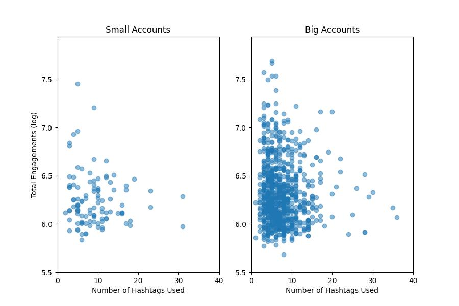
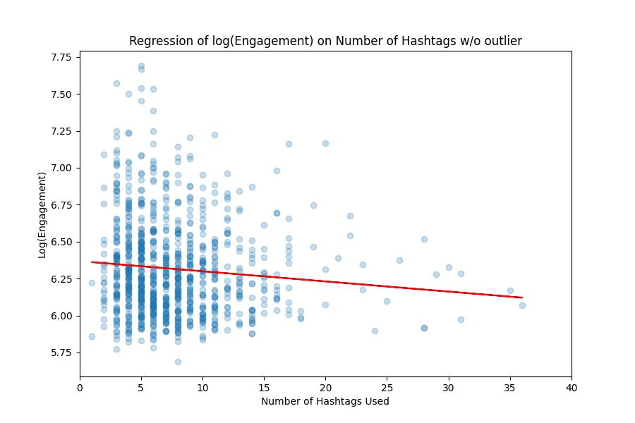
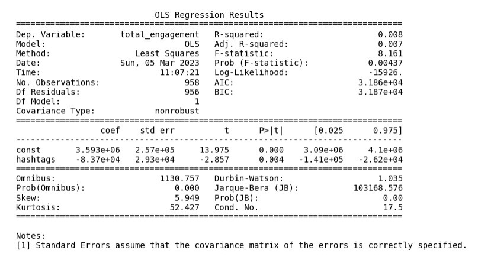

Below is a graph showing the distribution of number of hashtags used vs total engagement received by small accounts (1k to 10k followers) and big accounts (more than 10k followers).
This visualization is done to see general distribution of total engagements received by these accounts and the number of hashtags they used. Intuitively, we see that there is a downward trend when more hashtags are used in a post.
To quantify this relationship, we fitted a regression line to all the data available.
The slope of the line (\beta_1) was found to be -0.006874, indicating that for every additional hashtag put into video descriptions,the number of engagements received by the account is reduced by 0.6874%.
We also performed an Ordinary Least Squares (OLS) Regression
We found that the p-value of the t-test is 0.004. With a significance level of 5%, we conclude that the number of hashtags used affects the total engagements received.
Brought to you by Ammar, Sofea, Fara, and Eidlan. MadHacks 2023